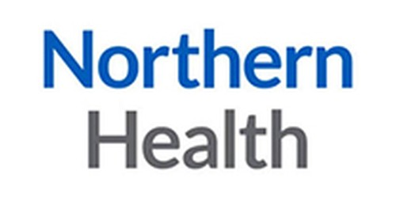

It is with genuine respect that I acknowledge the exceptional quality and thoughtful execution demonstrated by Commonground in this production. The brief for this project was both ambitious and sensitive: to create a 10–12-minute video that would be informative, engaging, and welcoming, serving as a meaningful resource for patients navigating cancer care. Commonground not only met this objective but exceeded expectations in several key areas.
What stood out most was the attention to detail and the deliberate investment in crafting a tone that was both warm and reassuring, critical for engaging patients on such a sensitive subject. Commonground has demonstrated a deep understanding of both the emotional and informational needs of the intended audience. Their ability to translate complex medical information into a compassionate and engaging visual narrative is commendable.
I recommend Christoph and Commonground for future projects, particularly those requiring sensitivity, professionalism, and high production standards.
Mike Masilamani, Northern Health